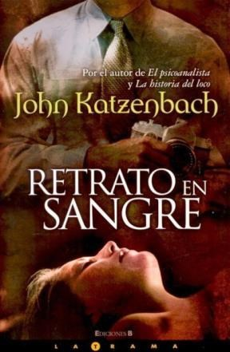
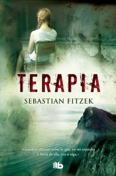
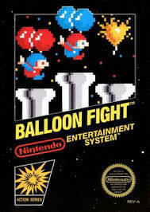
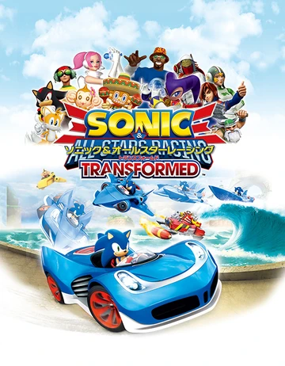
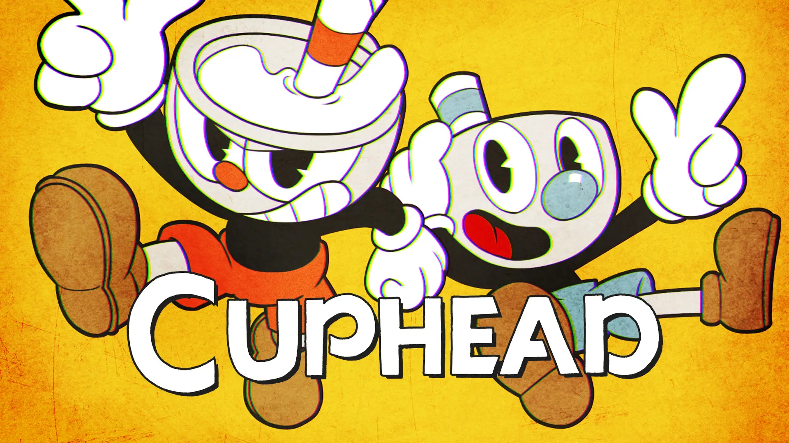

Me gusta leer mangas, manhwas, o novelas policiales, o fantasticas Ahora te muestro mis favoritos(que me acuerdo en este momento):
La historia sigue a Sung Jin-Woo, un cazador débil y menospreciado en un mundo donde portales conectan la Tierra con mazmorras llenas de monstruos y tesoros. Después de un evento traumático en una mazmorra, Sung Jin-Woo despierta con una habilidad única, la "Reappraisal Skill", que le permite ver misiones y estadísticas. Con el tiempo, descubre que puede subir de nivel como en un juego, convirtiéndose en un "Player", un cazador extremadamente poderoso. A medida que avanza, enfrenta desafíos cada vez mayores, desde monstruos poderosos hasta conspiraciones gubernamentales. La serie combina acción, aventura y elementos de juego de rol, y ha ganado popularidad internacional por su arte impresionante y su emocionante narrativa.
La trama gira en torno a un psicópata que se hace llamar "Rumpelstiltskin" y que secuestra a mujeres jóvenes, las encierra en un sótano y les hace recrear escenas de pinturas famosas utilizando la sangre como pintura. El protagonista de la historia es Peter, un ex detective que se retira del cuerpo tras un trágico incidente y se dedica a dar clases en una universidad. Sin embargo, su vida da un giro cuando recibe una llamada de "Rumpelstiltskin" retándolo a atraparlo antes de que cometa otro crimen. Peter se ve obligado a enfrentarse a su pasado y a sus propios demonios mientras intenta detener al psicópata y salvar a sus víctimas. La novela es un thriller psicológico tenso y lleno de giros inesperados que mantiene al lector en vilo hasta el final.
En "Terapia", Fitzek presenta la historia de un psicólogo llamado Viktor Larenz, quien está luchando por superar la misteriosa desaparición de su hija, Josy. La niña desapareció sin dejar rastro, y su pérdida ha afectado profundamente a Viktor y a su esposa. En un intento desesperado por encontrar respuestas, Viktor se retira a una cabaña en una remota isla donde encuentra a una paciente llamada Anna Spiegel, quien sufre de amnesia y parece tener una conexión con la desaparición de Josy. La trama se desarrolla en torno a los intentos de Viktor por descubrir la verdad sobre la desaparición de su hija y el misterio detrás de la amnesia de Anna. Fitzek es conocido por sus giros inesperados y sus tramas intrincadas que mantienen a los lectores en vilo hasta el final.
Tambien me gusta jugar a videojuegos de antes y de los nuevos aca muestro los que estoy jugando ultimamente:
"Balloon Fight" es un videojuego clásico desarrollado por Nintendo. Fue lanzado originalmente como un juego de arcade en 1984, y más tarde se convirtió en un título popular para la consola Nintendo Entertainment System (NES). El juego fue creado por el legendario diseñador de juegos Gunpei Yokoi. En "Balloon Fight", los jugadores controlan a un personaje llamado "Balloon Fighter" que vuela con dos globos atados a su espalda. El objetivo principal es derribar a otros "Balloon Fighters" mientras evitas obstáculos como aves y rayos. Si un globo es golpeado, el jugador pierde la capacidad de volar alto. Si ambos globos son golpeados, el jugador cae al agua y pierde una vida. Uno de los más viejitos que juego antes de cursar, uno de los mejores juegos para mi en 8 bits.
"Sonic & All-Stars Racing Transformed" es un videojuego de carreras desarrollado por Sumo Digital y publicado por Sega. Es la secuela de "Sonic & Sega All-Stars Racing" y fue lanzado en 2012 para varias plataformas, incluyendo PlayStation 3, Xbox 360, Wii U, PlayStation Vita y PC, entre otras. En este juego, los jugadores compiten en carreras de karts con personajes de la franquicia Sonic the Hedgehog y otros personajes icónicos de Sega, como AiAi de Super Monkey Ball, Vyse de Skies of Arcadia, y Ulala de Space Channel 5, entre otros. La principal novedad de "Sonic & All-Stars Racing Transformed" es la capacidad de transformar los vehículos durante las carreras. Los karts pueden convertirse en aviones y botes, lo que agrega variedad y dinamismo a las pistas y permite a los jugadores adaptarse a diferentes terrenos y obstáculos. El juego presenta una variedad de modos de juego, incluyendo carreras estándar, batallas, modo historia y modo multijugador tanto en línea como local. Además, cuenta con una amplia selección de pistas inspiradas en los mundos de los juegos de Sega y con una banda sonora que incluye remixes de temas clásicos de Sega. "Sonic & All-Stars Racing Transformed" fue bien recibido por los críticos y los jugadores por su jugabilidad sólida, sus gráficos coloridos y su nostálgica selección de personajes y pistas Este juego me gusta todo, los personajes, la movilidad, los graficos, y los escenarios, además tiene muchos desafios y no te podes aburrir nunca.
"Cuphead" es un videojuego de acción y plataformas desarrollado por StudioMDHR Entertainment. Fue lanzado en 2017 para Microsoft Windows y Xbox One, y posteriormente se lanzó para macOS, Nintendo Switch y PlayStation 4. El juego está inspirado en los dibujos animados de la década de 1930, con un estilo de arte y animación únicos que emulan el aspecto de las animaciones de la época de la era dorada de Disney y Fleischer Studios. La historia sigue a Cuphead y su hermano Mugman, dos tazas antropomórficas que se embarcan en una aventura para pagar una deuda con el diablo después de perder en un juego de dados. "Cuphead" se destaca por su dificultad desafiante, con combates contra jefes intensos y demandantes que requieren habilidad, reflejos rápidos y memorización de patrones para superar. Además de los combates contra jefes, el juego también presenta niveles de plataformas en 2D con elementos de shoot 'em up (disparos), donde los jugadores pueden enfrentarse a una variedad de enemigos mientras recogen monedas y power-ups. La estética única de "Cuphead", junto con su jugabilidad desafiante y su banda sonora de jazz swing original, lo han convertido en un título muy querido por los jugadores y críticos por igual. Ha ganado numerosos premios y ha sido elogiado por su atención al detalle y su fidelidad al estilo de animación clásico. Con este juego solo me hago mala sangre.
Me gusta jugar al futbol y al voley, y soy hincha de River (aunque ultimamente me hace renegar un poco)